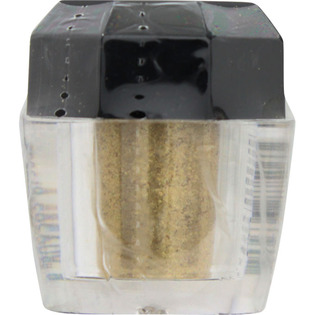

返回列表
产品名称：ドド スターダストパウダー

＿ ドド スターダストパウダー ＳＰ１５
メーカー ＿
JANコード 8809363875063
商品の特徴
マルチに使えるラメ＆パールのパウダーです。まるでスターダストのような光を放つパウダーが、華やかさを演出します。髪・目元・ネイルにもお使いいただけます。
成分・分量
＜全成分＞
マイカ、酸化チタン、メチルパラベン、プロピルパラベン（＋／－）酸化鉄、酸化スズ
用法及び用量
適量を指先に取り、目元・爪・髪になじませて下さい。